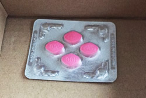
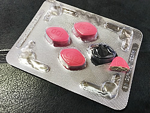
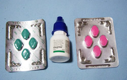
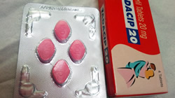
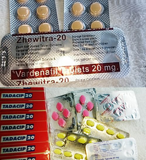

<?xml version="1.0" encoding="UTF-8"?><rss version="2.0"
	xmlns:content="http://purl.org/rss/1.0/modules/content/"
	xmlns:wfw="http://wellformedweb.org/CommentAPI/"
	xmlns:dc="http://purl.org/dc/elements/1.1/"
	xmlns:atom="http://www.w3.org/2005/Atom"
	xmlns:sy="http://purl.org/rss/1.0/modules/syndication/"
	xmlns:slash="http://purl.org/rss/1.0/modules/slash/"
	>

<channel>
	<title>女性ナイトライフ &#8211; くすりエクスプレスの教えてQ＆A</title>
	<atom:link href="https://www.kusuriexpress.com/qna/category/f-nightlife/feed/" rel="self" type="application/rss+xml" />
	<link>https://www.kusuriexpress.com/qna</link>
	<description>多くの方が気になる病気・症状の質問集</description>
	<lastBuildDate>Mon, 09 Jul 2018 01:47:48 +0000</lastBuildDate>
	<language>en-GB</language>
	<sy:updatePeriod>hourly</sy:updatePeriod>
	<sy:updateFrequency>1</sy:updateFrequency>
	<generator>https://wordpress.org/?v=4.7.5</generator>
	<item>
		<title>セックスレスのお悩み相談</title>
		<link>https://www.kusuriexpress.com/qna/%e3%82%bb%e3%83%83%e3%82%af%e3%82%b9%e3%83%ac%e3%82%b9%e3%81%ae%e3%81%8a%e6%82%a9%e3%81%bf%e7%9b%b8%e8%ab%87/</link>
		<pubDate>Wed, 13 Jun 2018 03:53:00 +0000</pubDate>
		<dc:creator><![CDATA[くすりエクスプレス]]></dc:creator>
				<category><![CDATA[女性ナイトライフ]]></category>
		<category><![CDATA[男性ナイトライフ]]></category>
		<category><![CDATA[セックス]]></category>
		<category><![CDATA[セックスレス]]></category>

		<guid isPermaLink="false">https://www.kusuriexpress.com/qna/?p=3518</guid>
		<description><![CDATA[セックスレスが増えているって本当ですか セックスレスを改善しましょう国勢調査のような大規模な調査があるわけではありませんが、(社)日本家族計画協会などの信用できる調査でも、セックスレスの夫婦が増えていることがうかがえます。最近の調査では40代の比較的若い夫婦でも40%以上が「ここ1カ月以上セックスしていない」と回答しています。... <span class="more">続きを読む</span>]]></description>
				<content:encoded><![CDATA[<h3>セックスレスが増えているって本当ですか</h3>
<p>セックスレスを改善しましょう国勢調査のような大規模な調査があるわけではありませんが、(社)日本家族計画協会などの信用できる調査でも、セックスレスの夫婦が増えていることがうかがえます。最近の調査では40代の比較的若い夫婦でも40%以上が「ここ1カ月以上セックスしていない」と回答しています。</p>
<p>その原因は夫婦の年代によって異なりますが、日本には夫婦のセックスを重要視せずに、セックスレスで当りまえとする風潮がうかがえます。しかし、夫婦のどちらかがセックスレスであることに不満をもっている場合は、当たり前ではすまない深刻な問題になります。</p>
<h3>セックスレスの定義</h3>
<p>医師や臨床心理師などが参加する日本性科学会の定義によると、セックスレスとは「1カ月以上セクシュアル・コンタクト(性的な接触)がないこと」です。「コンタクト」には性交に限らず、キスやペッティングも含まれるとされています。</p>
<p>しかし、新婚夫婦ならいざしらず40代以上の中高年夫婦では「1ヶ月」というインターバルは大変厳しい設定で、多くの夫婦がセックスレスということになりそうです。</p>
<p>セックスレスの定義は、この問題をとらえる切り口によって変わります。日本家族計画協会などでは、調査の対象も40代までの出産可能な夫婦に限られています。夫婦にとっては子づくり、社会問題としては少子化対策、というところから考えると「1ヶ月」という目安が妥当なのかもしれません。</p>
<p>子づくりは関係なく、純粋に夫婦やカップルのコミュニケーションとしてのセックスでは、どれくらいからがセックスレスかは一概には言えません。</p>
<p>ただし問題は、日本の中高年夫婦には「セックスレスで当りまえ」という風潮があって、熟年のセックスを軽視する傾向があることです。とくに夫婦のどちらかが勝手に「卒業」した気になっているのは、幸せな夫婦関係とは言えません。</p>
<h3>セックスレスになる原因やきっかけは何ですか?</h3>
<p>(社)日本家族計画協会の調査によると、結婚している男女がセックスに積極的に慣れない理由として、次のようなものが多くあげられています。</p>
<p><strong>男性の場合</strong><br />
・仕事で疲れている 28.2%<br />
・妻の出産後何となく 20.5%<br />
・面倒くさい 12.0%</p>
<p><strong>女性の場合</strong><br />
・面倒くさい 23.5%<br />
・出産後何となく 20.5%<br />
・仕事で疲れている 19.3%</p>
<p>同協会が調査対象にしているのが20~40代の男女なので、50代以上の夫婦や男女ではまた別の理由があげられると予想されます。</p>
<p>しかし、上にあげられた理由はよく考えてみると、「理由」になっていません。夫婦でのセックスに新鮮さがなくなって、したいと思う気持ちが強くないから「面倒くさい」「なんとなく」「疲れているから」が理由にあがってくるのだと考えなければなりません。</p>
<p>だとすると「新婚じゃああるまいし」という、ある意味でもっともな理由からセックスの回数も減ってくるとも言えます。それにしても、年齢にもよりますが1年も2年もセックスレスというのは、望ましいことではありません。</p>
<p>夫婦仲は悪くないが、性的対象としてはどこか嫌悪感があるという場合は少なくありません。性格的にどうしても合わないことがはっきりした、というような例は深刻で、こじれると話がセックスレスだけに終わらない可能性もあります。</p>
<p>セックスレスを当たり前とするのは日本の中高年夫婦の悪い癖です。夫婦の幸福感の向上にはセックスを含めた夫婦のパートナーシップを見直してみることも大切です。</p>
<h3>セックスレスは悪いことなのですか?</h3>
<p>セックスレスは男女や夫婦の年齢によって、生じてくる問題点も違ってきます。</p>
<p>・結婚前のカップルのセックスレス　―　晩婚化、非婚化<br />
・若い夫婦のセックスレス　―　不妊、少子化、幸福感の低減、離婚<br />
・中高年夫婦のセックスレス　―　幸福感の低減、相互無理解、熟年離婚</p>
<p>子育ても終わった中高年夫婦の場合は、何となくセックスに遠ざかっていても不自然ではなく、夫婦仲に問題が生じることもなさそうですが、あまりそれを当然視するのは問題です。</p>
<p>とくに夫が「家族でそんなことエッチなことができますか」などと冗談めかして言うのは、無神経で妻に対する思いやりにかける行為です。しかし、1ヶ月に1度はしなければならないなど杓子定規なインターバルを設定するのも、お互いに気持ちの上の負担が大きくなります。</p>
<p>いちばん大切なことは中高年になっても「セックスがありうる男と女」だということを認め合うことです。そしてそれが1年に1回でも何かの機会に実際のセックスにつながることがあれば、セックスレスとは言えません。</p>
<p>しかし日本には、50代、60代の夫婦がセックスレスで当りまえだという観念が広がりすぎているのも事実です。そういう通念に隠れて何となく不満を募らせいている夫や妻は案外多いのです。</p>
<h3>セックスレスは離婚や浮気の原因になりますか?</h3>
<p>20代、30代の若い夫婦で、妻が夫の誘いを断る、あるいは夫が妻の誘いを断るという形でセックスレス(セックス拒否)が続くと、ほとんどのケースで深刻な事態を招きます。</p>
<p>拒否された方はプライドを傷つけられ、心に簡単には癒しがたい傷を負います。その理由だけで即離婚には結びつかないかもしれませんが、それが浮気に発展した場合はもちろん、そうでなくても性格的な不一致など何かもう1つ理由が加わると、簡単に離婚話に結びつきます。</p>
<p>セックス拒否から浮気、離婚というコースをたどった場合でも、共通しているのはほとんどの場合セックスを拒否している側は事の大きさを自覚しておらず、まさか離婚にまで発展するとは思っていないことです。</p>
<p>夫の側のセックス拒否にはED（勃起不全・勃起力低下）を妻に打ち明けられずに、というケースがままあります。わざと寝る時間をずらしたりしているうちに、妻の不安と不信感を募らせるなどです。その中にはED治療薬を飲むだけで解決してしまうものもあるのに、知識不足も相まってずるずると問題を深刻化させていることがあります。</p>
<p>中高年になってからのセックスレスは、すぐ離婚に結びつくようなことはないでしょうが、どちらかが拒否をしている場合は、拒否された方が傷つくのは若い夫婦とまったく変わりありません。</p>
<p>お互いになんとなくというセックスレスではなく、一方が拒否するかたちでのセックスレスは結婚生活を壊しかねない重大な影響を与えることがあります。</p>
<h3>セックスレスを解消するには</h3>
<p>セックスレスの解消は当然ながらその原因から考えなければなりません。セックスレスの原因として良くあげられる、</p>
<p>・仕事が忙しくて疲れている<br />
・出産後のセックスの中断からなんとなく<br />
・家庭での役割が「男女」から「父母」にシフトして</p>
<p>はそれぞれに解決法も異なるはずです。</p>
<p>しかし、たとえは適切でないかもしれませんが、食べすぎの人にダイエットしてもらう方法はいろいろあるが、食欲のない人に食べさせるのはそれよりずっと難しいといえます。セックスレスを解消する難しさもそこにあります。</p>
<p>とくにセックスは誘われるとよけいしたくなくなるという、やっかいな性質もあるので、一朝一夕に解決とはいかないことが多いのです。</p>
<h3>忙しすぎる夫とのセックスレスを解消するには?</h3>
<p>夫の仕事が忙しく、夜遅く帰宅して朝もふつうに出勤となると、セックスの機会もなかなかありません。週末も疲れを取るためにゴロゴロしているだけ、ということになりがちです。</p>
<p>妻がさみしい気持ちや不満をもらすと、夫からは「仕事への無理解」と思われがちです。夫には家族のために仕事をしているのにという気もあるし、仕事への責任感もあります。何よりも本当に「疲れている」というのがこの問題のやっかいなところです。</p>
<p>したがって「それはさておいて」という対策は、あまり効果が期待できません。妻も夫が疲れているということに真剣に向き合う必要があります。</p>
<p>例えば1ヶ月の残業時間が100時間を超えるような「ブラック企業」的にハードな仕事をしているような場合には、セックスレスどころではなく夫が壊れてしまうこともあります。</p>
<p>男性は男性で自分の仕事に対する視野が狭くなることはありがちなので、そういう男性のぎりぎりの健康管理はある意味で妻の役目です。「そんな仕事辞めましょうよ」という妻の一言で夫がわれに返るということもあるのです。</p>
<p>もちろんこういうのは極端な例ですが、「疲れている夫が家庭でどう効率的に疲れを取ることができるか」をまず考えて、そのなかにセックスレス対策も位置づけていくという発想が必要です。</p>
<p>「疲れている」が口実に使われていることもあるでしょうが、お互いの身勝手がぶつかりあうと「たかがセックスレス」も重大な問題に発展します。お互いに少しずつの思いやりがあるのとでは天と地の違いになります。</p>
<h3>産後セックスレスの解消法は?</h3>
<p>出産後しばらくセックスがおあずけになるのは仕方ありませんが、そのまま何となくセックスレスになってしまうということがあるので気をつけないといけません。</p>
<p>産後セックスレスになるきっかけで多いのは、子育てストレスです。とくにおばあちゃん世代がいない核家族の第1子となると、経験のないお母さんのストレスはとても大きくなります。まだ夜と昼の区別がつかない乳児の授乳でふらふらになってしまうのです。</p>
<p>そのときに夫が協力的なら妻の負担が軽減し、なにより精神的なストレスを抱えずにすみます。しかし夫自体が幼児的で、赤ん坊にかまけてセックスにも応じない妻に不満を持ってイライラをぶちまけたりするようだと「産後セックスレス」がこじれてきます。</p>
<p>(社)日本家族計画協会の調査でも、セックスレスになるきっかけとして「産後なんとなく」が上位にあげられています。しかし実は「なんとなく」ではなく、夫が子育てに非協力的で妻のストレスが大きくなっているケースがたいへん多いのです。</p>
<p>慣れないパパの役割もママの役割もそれなりにストレスフルですが、ベビーが可愛いというなによりのご褒美あるので、お互いの協力があれば乗り切れます。まだ若い二人ですから産後のセックスレスが長びくこともありません。</p>
<h3>「お父さんお母さん」から「男と女」へ戻る方法は?</h3>
<p>子どもが思春期を迎えるころは、夫婦は男と女というよりはお父さんのお母さんの役割が圧倒的に優勢になります。</p>
<p>・子どもが精神的に安定しない時期で問題を起こしやすい。<br />
・教育費が高額になり経済的に苦しい時期にあたる。<br />
・夫も妻も40代の中年期にさしかかる。</p>
<p>いわば夫婦関係の胸突き八丁のようなときで、子どもが大学を卒業するころまでは「男と女」という関係はしばらくおあずけになることもめずらしくありません。それどころか、子どもが思春期のころは家庭では性的な話題はタブーになるのが普通です。家族でテレビを見ているときに、きわどい場面が出たときの気まずい雰囲気は、誰にも経験があります。</p>
<p>そんな訳で、まさにお互いの呼び名も「お父さん」と「お母さん」で20年も過ぎると、子どもたちが独立して家を出た後二人きりになったからと言って、すんなり「男と女」にもどれないのも無理はありません。</p>
<p>このような中高年夫婦で多いのは、非常に仲が良くお互いに理解もあるが、性的には多少の嫌悪感があるというケースです。嫌悪感という言葉はきついイメージがありますが、お父さんとお母さんという「仮面」があまり身につきすぎて、逆に男と女を出すことの抵抗感が強くなっているのです。</p>
<p>その抵抗感を取りのぞくもっともシンプルな方法は、旅行などの日常生活から離れたシチュエーションを作ることです。昔JRがハネムーンならぬフルムーンという第二の新婚旅行をPRしたことがありましたが、あまりに恥ずかしいネーミングなのでいつの間に消えてしまいました。そんな余計な理屈付けをしないで、シンプルに夫婦で旅行してみるのはいかがでしょうか。</p>
<h3>結婚前の恋人セックスレスの解消法は?</h3>
<p>雑誌などで恋人同士のセックスレスについて特集しているものをときどき目にするようになりました。ネットの相談サイトにも、同棲相手とセックスレスだがこのまま結婚してもいいのか、というような相談が寄せられています。</p>
<p>付き合いが長くなって男性から求められることがなくなった、というパターンの悩みが多いようですが、これもいわゆる「草食男子」が増えたという話の流れで解釈するべきことなのでしょうか。</p>
<p>実態があるのかないのか分からない「草食男子」という言葉の陰に、若年層の非正規雇用化、貧困化というシビアな現実があることを指摘する人もいます。若い男性が「恋愛・結婚・子育て」というふつうのコースをあきらめて、恋愛はするが結婚はしない、あるいは結婚はするが子どもは作らないと決めているケースがあるといいます。</p>
<p>婚前セックスレスの根底にそういう男性の「あきらめ」があるとしたら、結婚してからセックスレスが解消することは期待薄です。そもそもそういう男性の考えに賛成している場合以外は、結婚も考え直す必要があります。</p>
<p>「永すぎた春」という言葉がありますが、恋愛関係が長くてセックスレスになった、同棲期間中にセックスレスになったという場合は、結婚してから性生活が活発になるということは考えにくいことです。</p>
<p>お互いにセックスはあまり好きじゃないという場合は別にして、どちらかがセックスあり、子どもも欲しいというふつうの結婚生活を望む場合は、相手を変えるという選択もありでしょう。</p>
<p>もちろん、恋愛関係にある女性が長い期間セックスを拒否しているという状況も、そのまま結婚に進むのは心配です。どうして女性が嫌がっているのかはっきりさせないことには仕方ありません。</p>
<p>一方だけが拒否している婚前セックスレスは、解消法がどうというより恋愛関係を続ける意味があるのかどうかから勇気をもって考えた方がよいでしょう。</p>
<h3>相手を傷つけず、自分も傷つかない「誘い方」は?</h3>
<p>結婚前ならセックスへの誘いは、男性は誘われるような拒否されるような、女性は逃げるような待っているような「かけひき」があたりまえで、それが欲望を刺激する薬味のようなものでした。これはある意味で哺乳類に共通の性行動で、人間も無関係ではありません。</p>
<p>しかし、結婚してセックス公認の関係になるとこの「薬味」というか、ゲーム性がなくなります。これはとくに男性にとってはそれほどセックスに熱心ではなくなる大きな原因になります。浮気の虫が治まらない男性はセックスそのものより、この薬味やゲーム性を求めているのです。断られるかもしれないから誘いたくなる、というのが男です。</p>
<p>しかし、それが夫婦の間では別になります。断られると「なんでや」という不満だけが残ってしまうのです。欲望を刺激されることが少なくなっているのですから、そんなことがきっかけでたやすくセックスレスになってしまうこともあります。</p>
<p>したがって、問題の本質は「誘い方のテクニック」ではなく、誘ってみたくなる意外性や、完全にはあけっぴろげになっていない秘密性、馴れきってはいないつつしみなどがお互いにあることです。</p>
<p>いまさらそんなことを言われても困る、という気持ちはよく分かりますが、「欲望」はそういうことでしか刺激されないというのも事実です。セックスは誘われるとうんざりするというやっかいなもので、その誘い方がうまいとかヘタとかいう問題ではありません。</p>
]]></content:encoded>
			</item>
		<item>
		<title>不感症など女性の性の悩み解消</title>
		<link>https://www.kusuriexpress.com/qna/%e4%b8%8d%e6%84%9f%e7%97%87%e3%81%aa%e3%81%a9%e5%a5%b3%e6%80%a7%e3%81%ae%e6%80%a7%e3%81%ae%e6%82%a9%e3%81%bf%e8%a7%a3%e6%b6%88/</link>
		<pubDate>Wed, 13 Jun 2018 03:43:57 +0000</pubDate>
		<dc:creator><![CDATA[くすりエクスプレス]]></dc:creator>
				<category><![CDATA[女性ナイトライフ]]></category>
		<category><![CDATA[セックス]]></category>
		<category><![CDATA[セックスレス]]></category>
		<category><![CDATA[不感症]]></category>

		<guid isPermaLink="false">https://www.kusuriexpress.com/qna/?p=3513</guid>
		<description><![CDATA[不感症の原因と症状 不感症を改善しましょうセックスをしても快感がえられないというのは、女性とってもパートナーの男性にとっても深刻な問題ですが、そのわりに放置されることが多い問題でもあります。... <span class="more">続きを読む</span>]]></description>
				<content:encoded><![CDATA[<h3>不感症の原因と症状</h3>
<p>不感症を改善しましょうセックスをしても快感がえられないというのは、女性とってもパートナーの男性にとっても深刻な問題ですが、そのわりに放置されることが多い問題でもあります。</p>
<p>それが病気なのかどうかはっきりしないし、そもそも病院で治すという発想がありません。実は婦人科のクリニックでも充分に対応できるところは少ないのです。</p>
<p>不感症は病気などの身体の不調からくることよりもメンタルな要因が大きく関係している症状です。病院での治療例や統計的なデータも少なく、治療法と称するものの中には俗説や珍説、奇説の類も少なくありません。</p>
<h3>不感症にはどんなパターンがありますか</h3>
<p>女性が自分は不感症ではないかと心配になる症状には様々なパターンがあり、「不感症」という言葉には収まりきらないようなバリエーションがあります。</p>
<p>・ある程度快感は得られるがオーガズムに達しない。<br />
・ほとんど快感を得られず、もちろんオーガズムにも達しない。<br />
・オナニーでは感じるがセックスではほとんど感じない。<br />
・乳首を愛撫されたりするのは感じるが膣では快感がない。<br />
・性行為に対する嫌悪感があり、触れ合うのが苦痛で快感どころではない。<br />
・ある時期からセックスの快感を得られなくなった。<br />
・膣が濡れず、ピストン運動で痛みを感じる。</p>
<p>症状によって原因はいろいろ考えられますが、多くはメンタルなものと考えられます。</p>
<p>・男性に対する不信感や嫌悪感を抱くようになったトラウマ的な体験<br />
・夫やパートナーに対する嫌悪感<br />
・自分やパートナーの性的な知識や経験、テクニックの不足</p>
<p>などが要因が考えれます。</p>
<p>婦人科的な要因でもっとも多いのは更年期のホルモンバランスの変化によるものです。エストロゲンの分泌が急激に減少することによって、膣の潤い不足、膣の委縮などがおき、性交痛やセックスへの興味を失うなどの症状が出てきます。</p>
<h3>不感症に悩む女性はどれくらいいるのでしょうか</h3>
<p>婦人科には不感症の相談に応じることをアピールしているクリニックもあります。しかし、不感症の悩みや心配を抱えている女性で、実際に病院を訪れる人はごく一部と見られています。男性にもしオーガズムがなければ、つまり射精不能ということになれば不妊の原因になるので、病院を訪れる立派な(?)理由になります。しかし女性はオーガズムがなくも妊娠することができます。</p>
<p>それが女性の不感症が放置される理由だとすると、何たる男女差別かということになりますが、残念ながら現状はそれに近いものがあります。また、男性は女性が感じてくれることが何より嬉しいのですが、そのためにテクニックを磨くことには必ずしも熱心ではありません。</p>
<p>そのようなセックスでの不完全燃焼を含めると、不感症の女性の割合は非常に高いものになる可能性があります。むしろ、自らの快楽の追及にどん欲な新しい女性像というものの方が日本ではまだまだ虚像に近いのかもしれません。</p>
<p>男性のED（勃起不全）がセックスレスの大きな原因になっているように、女性の不感症もセックスレスの原因になっていると考えられます。女性のクオリティ・オブ・ライフの向上のためにも、「感じないことを放置しない」で対策に取り組む必要があります。</p>
<h3>不感症のもっとも多い原因は</h3>
<p>不感症の大きな原因に「未熟なセックス」「おざなりセックス」「義務セックス」があるといわれています。女性の性感は開発されるものだとよく言いますが、未熟なパートナーとおざなりのセックスを続けていたのでは、満足なオーガズムに達しなくても仕方ありません。</p>
<p>原因は男性の未熟さや手抜きにあるばかりでなく、女性自身の幼さや知識不足、意欲不足にあることも少なくありません。お互いにうまくいっているときは自然体のセックスでよいのですが、問題があるときには積極的に解決に取り組む姿勢が必要です。</p>
<p>女性が感じなくても感じている振りをする「演技」を続けていると、感じるセックスへの道は遠ざかるばかりです。女性は男性に気をつかっているつもりでも、結局男性のセックスでの気配り、優しさ、テクニックなどの開発の機会を奪っていることにもなります。</p>
<p>不感症を改善するためにもっとも役に立つのは、実はパートナーとの人間関係の改善です。夫やパートナーに対する愛情が冷めた状態では、性感の燃えるような高まりは期待することはできません。</p>
<h3>パートナーとの関係から女性が不感症になるきっかけには</h3>
<p>・夫の浮気<br />
・嫁姑関係への夫の無関心<br />
・出産直後のセックスレス期のこじれ<br />
・更年期障害への夫の無理解</p>
<h3>不感症の身体的な原因としては</h3>
<p>・冷え症による血行障害<br />
・更年期のホルモンバランスの変化や膣の委縮</p>
<h3>極端な冷え症ですが、それは不感症と関係がありますか</h3>
<p>冷え症という病気があるわけではありませんが女性にはかなり多い体質で、並みの病気以上に女性のクオリティ・オブ・ライフに大きな影響を与えています。</p>
<p>冷え症はおもに血行障害によって起きる症状で、手足や内臓の温度が下がってさまざまな体調不良の原因になります。女性に冷え性が多いのはホルモンバランスの変化から自律神経のはたらきが安定せず、末梢血管収縮や拡張のコントロールが狂いがちになるからです。</p>
<p>血行障害は身体の各器官の代謝不良を招くのはもちろん、体温が下がることで免疫力の低下も招きます。また女性は筋肉量が少なく静脈血やリンパ液を循環させる第二の心臓といわれるふくらはぎの筋肉が細いのも、血行がとどこおりがちになる原因の１つです。</p>
<p>冷え性で手足が冷たい、肩や首が凝っている、お腹やお尻も冷たいという状態では、セックスが気持ちよく感じないのは当然です。それどころかセックスをしようという気持ちにもなりにくいでしょう。</p>
<p>そういう意味では冷え性は女性の大敵で、不感症のもっとも多い原因の1つということができます。</p>
<p>冷え症を改善するには、さまざまな機会をとらえて全身の血行促進をはかることが基本です。お風呂をシャワーだけで済ますのではなく、半身浴でじっくり温まり身体の芯まで温まった血液を循環させることも効果があります。</p>
<p>有酸素運動で血液循環を促進するのも効果があります。糖分・炭水化物の摂りすぎは身体を冷やします。生活習慣も含めて冷え症体質の改善を図ることで、体調が良くなり、セックスでももっと感じることができるようになることが期待できます。</p>
<h3>性器の構造から不感症になることがありますか</h3>
<p>婦人科・形成外科のクリニックでは男性の包茎手術のようにクリトリスの包皮をむいて、性感をアップしようという治療を行なうところがあります。また出産後膣が広がってゆるくなることが女性の性感にも影響があるとして、膣を締める手術をするクリニックもあります。</p>
<p>これらは女性の性器の構造にある不感症の原因を治療するものですが、それが本当に不感症の原因かどうかは、はっきりしないことが多いようです。少なくともそれが単独の原因であることはむしろ少なく、他の心理的な要因が加わっていることが多いと考えられます。</p>
<p>その他に女性の性器の構造が原因になる不感症というものはありません。よく言われる上つきとか下つきというのは、骨盤の前傾、後傾の角度の違いで、どちらかがセックスの感度が良いということはありません。</p>
<p>もちろん生まれつき感じにくい体質などというものはないし、事故で脊椎に障害を受けたという場合を除けば後天的にそうなることもありません。</p>
<p>セックスのたびに痛みを感じる「性交疼痛症」といわれる症状は、性器の構造的な問題ではなく、感染症か子宮内膜症などの病気が原因のことがほとんどです。更年期の場合は多くは膣の委縮や潤い不足が性交痛の原因になることがあります。</p>
<h3>夫が嫌いになったわけではないのに、なぜ最近感じなくなった</h3>
<p>女性の不感症の原因で多いのは、夫やパートナーに対する嫌悪感からセックスが苦痛になって、というものです。夫の浮気がきっかけだったり、決定的な性格の不一致が明らかになったなど、いろいろなケースがあります。</p>
<p>しかし、夫が嫌いになったわけではないのに、なぜかいつからかセックスに積極的になれなくなり、しても感じなくなった、という悩みを持つ女性が少なくありません。</p>
<p>その理由として考えられるのは次のようなことです。</p>
<p>1.自分では認めたくないが、内心では夫に対する嫌悪感が強くなっている。<br />
ちょっとややこしい話になりますが、日々の生活を壊したくないのでその気持ちを抑圧しているが、潜在心理では夫に愛想を尽かしているというようなことも起こりえます。そんなときには本人としては理由のわからない不感症になることがあります。</p>
<p>2.夫に対する感情に限らず、意識していないストレスが性的な快感を妨げている。<br />
嫁姑関係、近所づきあいなどで、自分ではうまくやっているつもりでもその関係が無意識に大きなストレスになっている場合があります。</p>
<p>3.隠れている病気が原因の場合<br />
セックスの感覚だけでなく、急に味覚に変化があったなどというときは、気づいていない病気が身体の中で進行していることがあります。</p>
<p>4.更年期でホルモンバランスが大きく変化する時期にあたり、身体がその変化に追いついていない。<br />
ホルモンバランスの変化は自律神経の失調を招きやすく、さまざまな不調に悩まされることがあります。</p>
<h3>更年期障害と不感症はどんな関係がありますか</h3>
<p>女性は40代後半から50代前半にかけて閉経という人生の大きな節目を迎えますが、それによって性欲がなくなるわけでも不感症になるわけでもありません。人は脳でセックスすると言われるくらいで、年齢とセックスの関係は百人百様です。</p>
<p>しかし閉経以後は女性ホルモンのエストロゲンの分泌が急激に低下するので、女性は誰もが膣が濡れにくくなってきます。それが性交痛の原因になり、セックスに消極的になったり感じなくなったりしている女性はおおぜいいます。</p>
<p>ホルモンバランスの変化は膣の潤い不足だけではなく、自律神経の失調によるさまざまな身体や心の不調を生みます。それが更年期障害ですが、そのために気分が落ち込んだり、理由のない不安におそわれたりすることもあります。そんなときはセックスをしてもなかなか感じることができないのは当然です。</p>
<p>セックスをしても妊娠することがないというのは、ある意味でメリットであり女性に解放感をもたらす要因ですが、そんなアドバンテイジも更年期障害があると台なしになります。</p>
<p>更年期障害の症状の程度は人によってさまざまですが、ふだんの生活や性生活に与える影響が大きいようなら、エストロゲンを補給するホルモン療法が更年期の女性のクオリティ・オブ・ライフの向上に大きな効果を発揮することがあります。</p>
<h3>不感症の治療と改善</h3>
<p>不感症の治療や改善がなかなか難しいのは、次のような理由があります。</p>
<p>・放置してもなんとか日々は過ぎていくこと<br />
・他人にも病院にも相談しにくいこと</p>
<p>しかし「不感症」という言葉が適切かどうかは別にして、セックスで気持ち良くなれない状態を放置しておくのは、けっして幸せなことではありません。満足できるセックスはパートナーとの人間関係をよくするだけでなく、女性の生活の質をいろいろな面で向上させる力があるのです。</p>
<h3>病院で不感症の相談に応じてくれますか</h3>
<p>婦人科で相談することができますが、不妊治療や性感染症などの治療には経験が豊富で優れた技術があるクリニックでも、不感症の治療はあまり経験がない場合が少なくありません。</p>
<p>その理由は不感症の治療で病院を訪れる女性が非常に少ないことです。また、不感症の原因はメンタルな部分が大きいので、婦人科のノウハウでは対応しきれないという事情もあります。しかし、不感症専門というようなクリニックを探して受診すると、クリトリス包茎の手術をすすめられたりなど、見当違いの方向に行ってしまうこともあります。</p>
<p>原因がメンタルことにある場合は専門は婦人科ではなく心療内科とか精神科ということになりますが、実際にはそういう病院は敷居が高くて、なかなか受診するふんぎりがつかないようです。しかし、不感症の悩みが深刻な場合は、思い切って精神科をおとずれてカウンセリングを受けることが、原因を探るための近道になることがあります。</p>
<p>不感症の治療に関係がありそうな病院や施術所には次のようなものがあります。</p>
<p>・婦人科<br />
・精神科、心療内科<br />
・漢方医<br />
・鍼灸院<br />
・指圧・マッサージ<br />
・アロマ・エステなどのリラクゼーション<br />
・スポーツジムなどのエクササイズ</p>
<p>何が不感症の原因になっているか分らないとどこに行けばよいのかも分らない、というのが困るところです。しかし「冷え症が原因では」など自分なりにある程度の見当がつく場合は、例えば漢方医に相談して体質改善をはかるなど、まず何かのアクションを起こしてみることが大切です。</p>
<h3>不感症の治療薬というのはあるのですか</h3>
<p>更年期で膣の潤い不足から性交痛が生じたり不感症になっている場合は、エストロゲンのホルモン治療で改善を期待することができます。ひと口に不感症といっても原因によって治療法(対策)も治療薬も違ってきます。</p>
<p>ストレスやトラウマから本人も意識していないようなセックスに対する嫌悪感があるような場合は、精神科医のカウンセリングで隠れたトラウマを暴くことが「薬」になることもあります。うつが原因の不感症なら抗うつ剤が処方されることもあります。</p>
<p>ストレスなどからくる睡眠障害も不感症の原因になることがあります。そういう場合は睡眠導入剤が不感症の治療薬の役目を果たします。薬ではありませんが睡眠を誘うメラトニンのサプリメントも効果があります。</p>
<p>冷え症による血行障害で不感症ぎみになっている場合は漢方薬などによる体質改善が効く場合があります。冷え症に効く漢方薬は当帰芍薬散(トウキシャクヤクサン)や田七人参などが有名ですが、漢方薬の処方はたいへん複雑で素人判断では無理です。漢方医や信頼できる漢方薬局に処方してもらう必要があります。</p>
<p>バイアグラと同じシルデナフィルを成分にした「女性用バイアグラ」といわれる薬もあります。シルデナフィルの血管拡張作用が女性の性器にも潤いを増したり、感覚を鋭敏にする良い影響を与えるという考え方です。</p>
<p>その他薬ではありませんが、男性の精力剤に相当する女性用のサプリメントがいろいろ販売されています。効果は人によって異なりますが、体質に合えば元気が出て性感もアップすることが期待できます。</p>
<p>また、女性の不感症の薬と呼ばれるものの中には、男性が女性に飲ませる媚薬の類もあります。飲むとたちまち女性の顔が赤みを帯びて目が潤んでくる、とういような効果が宣伝されていますが、その効果のほどは使ってみないことには分らないというしかありません。</p>
<h3>セックスに興味を持ったり積極的になる良い方法はありませんか</h3>
<p>セックスにあまり興味を示さない「草食男子」が話題になりましたが、「草食化」の傾向は女子にも見られます。国立人口問題研究所の調査では、独身女性の49％が男性とつきあっておらず、未婚率も5年前より10％も増加しているといいます。</p>
<p>20年近くも続いてきた就職冬の時代や、非正規雇用の増加、若者世代の低所得化など、若者を取り巻く環境は男性だけでなく女性にも厳しいものです。セックスをするより生活が先だという、厳粛な生物学的な優先順位が若者のセックス離れの根底にあるのかもしれません。</p>
<p>最近出版された「セックス嫌いな若者たち 」(メディアファクトリー新書)という本が話題になっています。著者は 産婦人科医の北村邦夫氏です。この本によると、男性も女性もネットなどのヴァーチャルな性的刺激の方が気楽で、リアルな異性との性交を疎ましく感じているといいます。</p>
<p>結婚前の女性に限らず、結婚して子どももいるがどうしてもセックスが好きになれないという女性もいます。これはやはり身体の問題ではなく、心のどこかでセックスを嫌悪しているからだと考えられます。そんな状態を改善するには、セックスへの自然な欲求を通せんぼしている心の扉がどこにあるのかを突き止めることが必要です。</p>
<p>また、セックスが好きになり、セックスで気持ち良くなるためには、男性の性欲や身体に対する嫌悪感や疎ましさがなくなることと共に、自分の心や身体に自信を持ち、受け入れることも大切です。そのためには突飛なようですが格闘技系のスポーツで肉体改造を志すというようなことが、改善のきっかけになることもあります。</p>
<h3>エストロゲンのホルモン療法は不感症に効きますか</h3>
<p>おもにエストロゲン(卵胞ホルモン)を補てんし、補助的にプロゲステロン(黄体ホルモン)を補てんするのが、女性のホルモン療法です。ホルモン療法は更年期障害の治療に使われるほか、月経前症候群や月経困難症の治療にも使われます。</p>
<p>更年期障害の症状の1つに膣の乾燥があります。更年期になってエストロゲンの分泌が減少すると女性の多くは膣が潤いにくくなります。そうするとセックスのたびに痛みを感じるようになり、気持ち良くなるどころではありません。それがセックスレスのきっかけになることも少なくありません。</p>
<p>また、更年期障害が精神面に現れる、抑うつ感、理由のない不安感なども不感症の原因になります。子どもが独立した後の「空の巣症候群」から落ちこんでいる女性も少なくありません。エストロゲンの補てんはこういうさまざまな更年期障害を根本的に改善する効果があるので、性交痛はもちろん、精神面からくる不感症にも効果が十分期待できます。</p>
<p>ホルモン療法は頻尿や尿意切迫という泌尿器の症状も緩和するので、下の悩みを解消してセックスに気持ちが向きやすくなる効果も期待できます。</p>
<p>若い女性では強い生理痛や生理前のイライラなどの月経トラブルが不感症の間接的な原因になっていることがあります。このようなケースも、ホルモン療法でトラブルを解消することで不感症も改善することがあります。</p>
<h3>女性用バイアグラとはどんなものですか</h3>
<p>精力剤を女性用バイアグラと称して販売しているものもありますが、ずばりバイアグラの成分であるシルデナフィルを配合した、文字通りの「女性用バイアグラ」もあります。男性の勃起をサポートする成分が女性に何の関係があるのか不思議な感じがしますが、この薬の目的は女性の性感のアップ、つまり不感症の改善です。</p>
<p>バイアグラが勃起を助けるのは成分のシルデナフィルに血管拡張作用があるからです。この作用そのものは男女差がないので、女性の外陰部や膣の血管も拡張して性器への血行がよくなるはずです。</p>
<p>バイアグラを製造しているファイザー社もそう考えて、50人の女性に投与試験を行ったそうです。その結果は女性にも</p>
<p>・性欲の向上<br />
・膣の潤いの増加<br />
・性感の向上(不感症の改善)</p>
<p>などの効果がみられたといいます。</p>
<p>シルデナフィルはまだ女性の不感症の治療薬として承認されたわけではありませんが、将来的にはその可能性があります。最近はED治療薬が前立腺肥大や動脈硬化の薬としても承認されるなど、血管機能の向上作用が認められてどんどん用途が広がっているからです。</p>
<p>女性の不感症は、見た目にはっきりわかる症状ではなく性交も可能なので、男性のEDほど本気で相手にされないところがあるのが実情です。しかし、不感症に悩む女性の数はEDの男性よりも多いと考えられているので、シルデナフィルへの期待も高まるところです。</p>
<h3>漢方薬で不感症は改善しますか</h3>
<p>漢方では不感症を「肝」の働きの不調と考えます。漢方でいう肝の働きは西洋医学の肝臓機能とは別物で、気の流れや自律神経を通じて感情や身体の機能を調節する働きです。</p>
<p>この肝の働きが「寒」と「滞」に傾くと、生理痛、下腹部痛、冷え症、不感症などがおきるといいます。なかなか難しいのですが、漢方ではやはり冷えと不感症の関係を重視しているということは言えそうです。</p>
<p>冷え症に処方される漢方は、当帰、生姜、人参などですが、その組み合わせはたいへん複雑で専門家に相談するしかありません。</p>
<p>漢方は体質改善にはとても有効な場合がありますが、そのためにはまず体質を診てから合う薬を調合しなければなりません。漢方では人の体質を「実証」と「虚証」、その中間の「中間症」に分けます。実証は強健な体質、虚証は虚弱体質です。冷え症はこの3つのどの体質に起きる症状で、同じ冷え症でも薬がそれぞれ違います。</p>
<p>例えば実証の冷え症には「桃核承気湯」、中間症には「加味逍遙散」、虚証には「当帰芍薬散」などが処方されます。</p>
<p>漢方ですべての不感症が改善するとは言えませんが、体質からくる不感症の場合は合う薬を飲むことで改善することが期待できます。</p>
<h3>オナニーではイケてもセックスでイケないのは何故</h3>
<p>オナニーではオーガズムに達するけれど、セックスでは達しないという女性は少なくありません。これを不感症というなら、もしかすると女性の半数近くが不感症ということになるかもしれません。</p>
<p>しかしこれは不感症ではなく、セックスのムードつくりが下手だったり、技術不足だったりという「ヒューマン・エラー」です。また、それはかならずしも男性だけの責任ではありません。</p>
<p>男性にとっても女性にとっても、オナニーは気楽で手軽に快感を得られる行為です。自由に想像の翼を広げて、好きなシチュエーションで楽しむことができます。それに比べてセックスは生身の人間が相手だけに、めんどうくさいことも、気をつかうこともいろいろあります。</p>
<p>セックスはオナニーとはまったく違う、二人の人間の共同作業なのです。お互いに大人になって、相手を思いやる気持ちや、わがままを抑える気持ちがないと、いっしょにクライマックスに登りつめることはできません。相手があるからこそ素晴らしいのですが、わずらわしいと言えばこんなにわずらわしいことはないとも言えます。</p>
<p>・感じるポイントの開発<br />
・感じるためのムードつくり<br />
・感じるための心理的余裕の持ち方</p>
<p>こんなことが自然にできる大人と男と女になることが、感じるセックスのためには必要です。</p>
<h3>不感症を改善するエクササイズを教えてください</h3>
<p>有酸素運動やエクササイズ、スポーツは不感症の改善に効果があります。それは、どこの筋肉を鍛えるというようなことではなく、ドーパミンやセロトニン、ノルアドレナリンなどの脳内神経伝達物質の分泌を促進するからです。</p>
<p>これらの脳内ホルモンのバランスが良くなることで、自律神経や感情の働きが安定します。セックスで気持ち良くなれないのは、身体の不調というより感情や神経のバランスのわるさがより深く関係しています。人は脳でセックスすると言ってもよいのです。</p>
<p>1日に5～10分程度の運動でも脳内の神経伝達物質のバランスは良くなり、</p>
<p>・自律神経のはたらきを安定させる<br />
・ストレスに強い体質を作る<br />
・免疫力をアップする</p>
<p>などの効果が期待できます。</p>
<p>運動は毎日しなくても、週に2～3回あるいは週末だけでも身体を動かすことで上記のような効果があります。また、運動には、気分の落ちこみを防ぎ、やる気をアップする効果もあります。</p>
<p>スポーツジムに通って器具を使う運動をしなくても、早歩き程度のウォーキングで充分に効果があります。ポイントはある程度心拍数が上がって、汗をかくくらいの運動をすることです。ぶらぶら歩く程度の散歩ではあまり効果が期待できません。</p>
<h3>不感症を改善する食べ物はありますか</h3>
<p>セックスで気持ち良くなるために、食生活で気をつけたいことは次の2点です。</p>
<p>・糖質、炭水化物を摂りすぎない<br />
・タンパク質を積極的に摂る</p>
<p>甘いもの、パン、麺類の食べすぎは、血糖値やコレステロール値を上昇させて肥満の原因になる他、血管機能や神経伝達機能を低下させる原因にもなります。これが進行すると動脈硬化や糖尿病になるわけですが、そこまでいかなくてもセックスの感度に影響を与えることはじゅうぶん考えられます。</p>
<p>また、糖質・炭水化物の摂りすぎは、冷え症の原因にもなります。東洋医学でよく言われる「体を冷やす食べ物」の中に、白砂糖と小麦粉が入っていることも覚えておいてください。</p>
<p>一方、タンパク質は血液や筋肉を作る材料であるとともに、神経の活動に欠かせないセロトニンなどの脳内ホルモンの材料でもあります。女性は月経で血液を失うので、鉄欠乏性の貧血になることがあります。鉄分は肉類などのタンパク質が豊富な食品に多いので、鉄欠乏性貧血の女性を調べるとタンパク質の摂取が少ない人が多いのです。</p>
<p>ファストフードやパン・お菓子などで食事を済ませている女性、あるいはダイエットで肉や魚を制限している女性は、タンパク質不足、アミノ酸不足になっていることがあります。これは身体だけでなく精神活動の安定にも悪い影響を与えるので注意が必要です。</p>
<p>柔らかくて消化の良い食べ物だけを選んで食べるのも、心身の活動を低下させる原因の1つになります。食物繊維を含んだ、よく噛んで食べなければいけない食品も積極的に食生活に摂りいれましょう。</p>
]]></content:encoded>
			</item>
		<item>
		<title>ラブグラ（女性用バイアグラ）の効果・服用方法</title>
		<link>https://www.kusuriexpress.com/qna/%e3%83%a9%e3%83%96%e3%82%b0%e3%83%a9%e5%a5%b3%e6%80%a7%e7%94%a8%e3%83%90%e3%82%a4%e3%82%a2%e3%82%b0%e3%83%a9%e3%81%ae%e5%8a%b9%e6%9e%9c%e3%83%bb%e6%9c%8d%e7%94%a8%e6%96%b9%e6%b3%95/</link>
		<pubDate>Mon, 11 Jun 2018 03:29:11 +0000</pubDate>
		<dc:creator><![CDATA[くすりエクスプレス]]></dc:creator>
				<category><![CDATA[ED（勃起不全）]]></category>
		<category><![CDATA[女性ナイトライフ]]></category>
		<category><![CDATA[ウーメラ]]></category>
		<category><![CDATA[バイアグラ]]></category>
		<category><![CDATA[ラブグラ]]></category>

		<guid isPermaLink="false">https://www.kusuriexpress.com/qna/?p=3388</guid>
		<description><![CDATA[女性のためのバイアグラで、性感度・満足度を高める！ バイアグラの成分は、男の場合は勃起するという「目に見える」効能があるが、これを女性が飲んだらどうなるかと考えたのが、ジェネリック医薬品の製造で世界的に有名なインドの製薬会社アジャンタファーマ社だ。... <span class="more">続きを読む</span>]]></description>
				<content:encoded><![CDATA[<h3>女性のためのバイアグラで、性感度・満足度を高める！</h3>
<p>バイアグラの成分は、男の場合は勃起するという「目に見える」効能があるが、これを女性が飲んだらどうなるかと考えたのが、ジェネリック医薬品の製造で世界的に有名なインドの製薬会社アジャンタファーマ社だ。</p>
<p>予想の範囲内だったのは、クリトリスの充実とその感度のアップだったという。しかしそれ以外に、バイアグラは媚薬ではないことが念押しされる薬だが女性が使用すると、セックスに積極的になるという効果が見られた。それは性器への血行が促進されて膣の潤いが増加したこと、刺激に対する感覚が敏感になったせいだと考えられている。</p>
<h3>ラブグラ（ウーメラ）の効果・作用は？</h3>
<p>バイアグラがなぜ勃起を助けるかという薬理は非常に明快だ。しかしラブグラがなぜ女性の性感を向上させるかははっきりとしたことは分っていない。男の陰茎海綿体の平滑筋の緊張をほぐす働きが女性にどう効いているのか、ペニスの中折れの原因になる酵素を阻害する作用が女性にどう効いているのか、よく分かってはいないのだ。</p>
<p>ただパートナーの女性に飲ませたがる男が増えているのは事実のようだ。その男たちは、男を立たせる薬に女をいかせる効果もあることに気づいたのだ。</p>
<h3>ラブグラ（ウーメラ）はこんな人に効く</h3>
<p>女性が更年期になると女性ホルモンの影響で膣の潤いが不足しがちなことはよく知られているが、ホルモン療法には抵抗のある人も少なくない。そんなときは、この女性用バイアグラが潤い不足と性感の低下に即効性を発揮してくれることが期待できる。</p>
<p>男性にとってのバイアグラほどの高確率で効くかどうかは分らないが、性交痛を解消してセックスへの積極的な気持ちを取りもどすきっかけになればハッピーだ。</p>
<h3>ラブグラ（ウーメラ）の効果的な飲み方</h3>
<p>ラブグラもバイアグラと同じで空腹時に飲むのが薬の効果を100％発揮させるコツだ。つまり男が飲むタイミングで女性にも飲んでもらえばよいわけだ。食後は2時間ほど空けてから飲むのがセオリーだ。</p>
<p>とくに脂こい食事のときは3時間以上空けた方が良い。配合量が100mgと多いので、ピルカッターで割って2分の1錠か4分の1錠から使いはじめると良いだろう。</p>
<h3>ラブグラ（ウーメラ）はここに注意</h3>
<p>いっしょに飲むと危険な薬も当然バイアグラと同じだ。狭心症の治療などに使われるニトログリセリン系の薬は絶対に併用することができない。併用すると血圧が下がりすぎて命にかかわることもある。ラブグラの副作用は血管の拡張作用にともなう、顔のほてりや頭痛などである。</p>
]]></content:encoded>
			</item>
		<item>
		<title>女性の不感症原因と症状、更年期障害との関係</title>
		<link>https://www.kusuriexpress.com/qna/%e5%a5%b3%e6%80%a7%e3%81%ae%e4%b8%8d%e6%84%9f%e7%97%87%e5%8e%9f%e5%9b%a0%e3%81%a8%e7%97%87%e7%8a%b6%e3%80%81%e6%9b%b4%e5%b9%b4%e6%9c%9f%e9%9a%9c%e5%ae%b3%e3%81%a8%e3%81%ae%e9%96%a2%e4%bf%82/</link>
		<pubDate>Thu, 07 Jun 2018 05:18:51 +0000</pubDate>
		<dc:creator><![CDATA[くすりエクスプレス]]></dc:creator>
				<category><![CDATA[セックスレス]]></category>
		<category><![CDATA[女性ナイトライフ]]></category>
		<category><![CDATA[更年期]]></category>
		<category><![CDATA[ラブグラ]]></category>
		<category><![CDATA[不感症]]></category>

		<guid isPermaLink="false">https://www.kusuriexpress.com/qna/?p=3245</guid>
		<description><![CDATA[不感症の原因と症状 セックスをしても快感がえられないというのは、女性とってもパートナーの男性にとっても深刻な問題ですが、そのわりに放置されることが多い問題でもあります。... <span class="more">続きを読む</span>]]></description>
				<content:encoded><![CDATA[<h3>不感症の原因と症状</h3>
<p>セックスをしても快感がえられないというのは、女性とってもパートナーの男性にとっても深刻な問題ですが、そのわりに放置されることが多い問題でもあります。<br />
それが病気なのかどうかはっきりしないし、そもそも病院で治すという発想がありません。実は婦人科のクリニックでも充分に対応できるところは少ないのです。</p>
<p>不感症は病気などの身体の不調からくることよりもメンタルな要因が大きく関係している症状です。病院での治療例や統計的なデータも少なく、治療法と称するものの中には俗説や珍説、奇説の類も少なくありません。</p>
<h3>不感症にはどんなパターンがありますか</h3>
<p>女性が自分は不感症ではないかと心配になる症状には様々なパターンがあり、「不感症」という言葉には収まりきらないようなバリエーションがあります。</p>
<ul>
<li>ある程度快感は得られるがオーガズムに達しない。</li>
<li>ほとんど快感を得られず、もちろんオーガズムにも達しない。</li>
<li>オナニーでは感じるがセックスではほとんど感じない。</li>
<li>乳首を愛撫されたりするのは感じるが膣では快感がない。</li>
<li>性行為に対する嫌悪感があり、触れ合うのが苦痛で快感どころではない。</li>
<li>ある時期からセックスの快感を得られなくなった。</li>
<li>膣が濡れず、ピストン運動で痛みを感じる。</li>
</ul>
<p><strong>症状によって原因はいろいろ考えられますが、多くはメンタルなものと考えられます。</strong></p>
<ul>
<li>男性に対する不信感や嫌悪感を抱くようになったトラウマ的な体験</li>
<li>夫やパートナーに対する嫌悪感。</li>
<li>自分やパートナーの性的な知識や経験、テクニックの不足</li>
</ul>
<p>などが要因が考えれます。<br />
婦人科的な要因でもっとも多いのは更年期のホルモンバランスの変化によるものです。エストロゲンの分泌が急激に減少することによって、膣の潤い不足、膣の委縮などがおき、性交痛やセックスへの興味を失うなどの症状が出てきます。</p>
<p>更年期障害の症状の程度は人によってさまざまですが、ふだんの生活や性生活に与える影響が大きいようなら、エストロゲンを補給する<a href="../../../../categories/%E7%94%B7%E5%A5%B3%E3%81%AE%E6%9B%B4%E5%B9%B4%E6%9C%9F%E3%83%BB%E3%83%9B%E3%83%AB%E3%83%A2%E3%83%B3%E5%89%A4/%E5%A5%B3%E6%80%A7%E3%83%9B%E3%83%AB%E3%83%A2%E3%83%B3%E5%89%A4/index.html">ホルモン療法</a>が更年期の女性のクオリティ・オブ・ライフの向上に大きな効果を発揮することがあります。</p>
<h3>不感症に悩む女性はどれくらいいるのでしょうか</h3>
<p>婦人科には不感症の相談に応じることをアピールしているクリニックもあります。しかし、不感症の悩みや心配を抱えている女性で、実際に病院を訪れる人はごく一部と見られています。男性にもしオーガズムがなければ、つまり射精不能ということになれば不妊の原因になるので、病院を訪れる立派な(?)理由になります。しかし女性はオーガズムがなくも妊娠することができます。</p>
<p>それが女性の不感症が放置される理由だとすると、何たる男女差別かということになりますが、残念ながら現状はそれに近いものがあります。また、男性は女性が感じてくれることが何より嬉しいのですが、そのためにテクニックを磨くことには必ずしも熱心ではありません。</p>
<p>そのようなセックスでの不完全燃焼を含めると、不感症の女性の割合は非常に高いものになる可能性があります。むしろ、自らの快楽の追及にどん欲な新しい女性像というものの方が日本ではまだまだ虚像に近いのかもしれません。</p>
<p>男性の<a href="../../../../categories/night-life/ED%E6%B2%BB%E7%99%82%E8%96%AC/index.html">ED（勃起不全）</a>がセックスレスの大きな原因になっているように、女性の不感症もセックスレスの原因になっていると考えられます。女性のクオリティ・オブ・ライフの向上のためにも、「感じないことを放置しない」で対策に取り組む必要があります。</p>
<h3>不感症のもっとも多い原因は</h3>
<p>不感症の大きな原因に「未熟なセックス」「おざなりセックス」「義務セックス」があるといわれています。女性の性感は開発されるものだとよく言いますが、未熟なパートナーとおざなりのセックスを続けていたのでは、満足なオーガズムに達しなくても仕方ありません。</p>
<p>原因は男性の未熟さや手抜きにあるばかりでなく、女性自身の幼さや知識不足、意欲不足にあることも少なくありません。お互いにうまくいっているときは自然体のセックスでよいのですが、問題があるときには積極的に解決に取り組む姿勢が必要です。</p>
<p>女性が感じなくても感じている振りをする「演技」を続けていると、感じるセックスへの道は遠ざかるばかりです。女性は男性に気をつかっているつもりでも、結局男性のセックスでの気配り、優しさ、テクニックなどの開発の機会を奪っていることにもなります。</p>
<p>不感症を改善するためにもっとも役に立つのは、実はパートナーとの人間関係の改善です。夫やパートナーに対する愛情が冷めた状態では、性感の燃えるような高まりは期待することはできません。</p>
<p>女性の不感症、膣の潤い不足などに効果が期待できるお薬として<a href="../../../../products/%E3%83%A9%E3%83%96%E3%82%B0%E3%83%A9%EF%BC%88%E5%A5%B3%E6%80%A7%E7%94%A8%E3%83%90%E3%82%A4%E3%82%A2%E3%82%B0%E3%83%A9)/index.html">ラブグラ</a>があります。</p>
<p>ラブグラはシルデナフィルと言う男性向けのED治療薬の成分ですが、女性の膣、特にクリトリスへの血流を増やして感度が大幅に高まります。</p>
<h3>パートナーとの関係から女性が不感症になるきっかけには</h3>
<ul>
<li>夫の浮気</li>
<li>嫁姑関係への夫の無関心</li>
<li>出産直後のセックスレス期のこじれ</li>
<li>更年期障害への夫の無理解</li>
</ul>
<p>などがあります。</p>
<p>不感症の身体的な原因としては</p>
<ul>
<li>冷え症による血行障害</li>
<li>更年期のホルモンバランスの変化や膣の委縮</li>
</ul>
<p>などがあります。</p>
<h3>極端な冷え症ですが、それは不感症と関係がありますか</h3>
<p>冷え症という病気があるわけではありませんが女性にはかなり多い体質で、並みの病気以上に女性のクオリティ・オブ・ライフに大きな影響を与えています。</p>
<p>冷え症はおもに血行障害によって起きる症状で、手足や内臓の温度が下がってさまざまな体調不良の原因になります。女性に冷え性が多いのはホルモンバランスの変化から自律神経のはたらきが安定せず、末梢血管収縮や拡張のコントロールが狂いがちになるからです。</p>
<p>血行障害は身体の各器官の代謝不良を招くのはもちろん、体温が下がることで免疫力の低下も招きます。また女性は筋肉量が少なく静脈血やリンパ液を循環させる第二の心臓といわれるふくらはぎの筋肉が細いのも、血行がとどこおりがちになる原因の１つです。</p>
<p>冷え性で手足が冷たい、肩や首が凝っている、お腹やお尻も冷たいという状態では、セックスが気持ちよく感じないのは当然です。それどころかセックスをしようという気持ちにもなりにくいでしょう。</p>
<p>そういう意味では冷え性は女性の大敵で、不感症のもっとも多い原因の1つということができます。</p>
<p>冷え症を改善するには、さまざまな機会をとらえて全身の血行促進をはかることが基本です。お風呂をシャワーだけで済ますのではなく、半身浴でじっくり温まり身体の芯まで温まった血液を循環させることも効果があります。</p>
<p>有酸素運動で血液循環を促進するのも効果があります。糖分・炭水化物の摂りすぎは身体を冷やします。生活習慣も含めて冷え症体質の改善を図ることで、体調が良くなり、セックスでももっと感じることができるようになることが期待できます。</p>
<h3>性器の構造から不感症になることがありますか</h3>
<p>婦人科・形成外科のクリニックでは男性の包茎手術のようにクリトリスの包皮をむいて、性感をアップしようという治療を行なうところがあります。また出産後膣が広がってゆるくなることが女性の性感にも影響があるとして、膣を締める手術をするクリニックもあります。</p>
<p>これらは女性の性器の構造にある不感症の原因を治療するものですが、それが本当に不感症の原因かどうかは、はっきりしないことが多いようです。少なくともそれが単独の原因であることはむしろ少なく、他の心理的な要因が加わっていることが多いと考えられます。</p>
<p>その他に女性の性器の構造が原因になる不感症というものはありません。よく言われる上つきとか下つきというのは、骨盤の前傾、後傾の角度の違いで、どちらかがセックスの感度が良いということはありません。</p>
<p>もちろん生まれつき感じにくい体質などというものはないし、事故で脊椎に障害を受けたという場合を除けば後天的にそうなることもありません。</p>
<p>セックスのたびに痛みを感じる「性交疼痛症」といわれる症状は、性器の構造的な問題ではなく、感染症か子宮内膜症などの病気が原因のことがほとんどです。更年期の場合は多くは膣の委縮や潤い不足が性交痛の原因になることがあります。</p>
<h3>夫が嫌いになったわけではないのに、なぜ最近感じなくなった</h3>
<p>女性の不感症の原因で多いのは、夫やパートナーに対する嫌悪感からセックスが苦痛になって、というものです。夫の浮気がきっかけだったり、決定的な性格の不一致が明らかになったなど、いろいろなケースがあります。</p>
<p>しかし、夫が嫌いになったわけではないのに、なぜかいつからかセックスに積極的になれなくなり、しても感じなくなった、という悩みを持つ女性が少なくありません。</p>
<p>その理由として考えられるのは次のようなことです。</p>
<p><strong>1.自分では認めたくないが、内心では夫に対する嫌悪感が強くなっている。</strong><br />
ちょっとややこしい話になりますが、日々の生活を壊したくないのでその気持ちを抑圧しているが、潜在心理では夫に愛想を尽かしているというようなことも起こりえます。そんなときには本人としては理由のわからない不感症になることがあります。</p>
<p><strong>2.夫に対する感情に限らず、意識していないストレスが性的な快感を妨げている。</strong><br />
嫁姑関係、近所づきあいなどで、自分ではうまくやっているつもりでもその関係が無意識に大きなストレスになっている場合があります。</p>
<p><strong>3.隠れている病気が原因の場合</strong><br />
セックスの感覚だけでなく、急に味覚に変化があったなどというときは、気づいていない病気が身体の中で進行していることがあります。</p>
<p><strong>4.更年期でホルモンバランスが大きく変化する時期にあたり、身体がその変化に追いついていない。</strong><br />
ホルモンバランスの変化は自律神経の失調を招きやすく、さまざまな不調に悩まされることがあります。</p>
<h3>更年期障害と不感症はどんな関係がありますか</h3>
<p>女性は40代後半から50代前半にかけて閉経という人生の大きな節目を迎えますが、それによって性欲がなくなるわけでも不感症になるわけでもありません。人は脳でセックスすると言われるくらいで、年齢とセックスの関係は百人百様です。</p>
<p>しかし閉経以後は女性ホルモンのエストロゲンの分泌が急激に低下するので、女性は誰もが膣が濡れにくくなってきます。それが性交痛の原因になり、セックスに消極的になったり感じなくなったりしている女性はおおぜいいます。</p>
<p>ホルモンバランスの変化は膣の潤い不足だけではなく、自律神経の失調によるさまざまな身体や心の不調を生みます。それが更年期障害ですが、そのために気分が落ち込んだり、理由のない不安におそわれたりすることもあります。そんなときはセックスをしてもなかなか感じることができないのは当然です。</p>
<p>セックスをしても妊娠することがないというのは、ある意味でメリットであり女性に解放感をもたらす要因ですが、そんなアドバンテイジも更年期障害があると台なしになります。</p>
]]></content:encoded>
			</item>
		<item>
		<title>エクストラ・スーパーPフォース、ラブグラ体験談【40代男性】</title>
		<link>https://www.kusuriexpress.com/qna/%e3%82%a8%e3%82%af%e3%82%b9%e3%83%88%e3%83%a9%e3%83%bb%e3%82%b9%e3%83%bc%e3%83%91%e3%83%bcp%e3%83%95%e3%82%a9%e3%83%bc%e3%82%b9%e3%80%81%e3%83%a9%e3%83%96%e3%82%b0%e3%83%a9%e4%bd%93%e9%a8%93%e8%ab%87/</link>
		<pubDate>Fri, 02 Feb 2018 04:36:23 +0000</pubDate>
		<dc:creator><![CDATA[くすりエクスプレス]]></dc:creator>
				<category><![CDATA[ED（勃起不全）]]></category>
		<category><![CDATA[ナイトライフ商品体験談！]]></category>
		<category><![CDATA[女性ナイトライフ]]></category>
		<category><![CDATA[エクストラ・スーパーPフォース]]></category>
		<category><![CDATA[ラブグラ]]></category>
		<category><![CDATA[体験談]]></category>

		<guid isPermaLink="false">https://www.kusuriexpress.com/qna/?p=2232</guid>
		<description><![CDATA[2年くらい前に人妻と不倫してた時に初めて貰い物のバイアグラを使ったのが初めてのEDデビューでした。 その時は効きすぎたのか股間に血液が集まって爆発しそうな感じでホントにギンギンになるんだと感じました。... <span class="more">続きを読む</span>]]></description>
				<content:encoded><![CDATA[<figure style="width: 250px" class="wp-caption alignnone"><figcaption class="wp-caption-text">ご投稿写真</figcaption></figure>
<p>2年くらい前に人妻と不倫してた時に初めて貰い物のバイアグラを使ったのが初めてのEDデビューでした。</p>
<p>その時は効きすぎたのか股間に血液が集まって爆発しそうな感じでホントにギンギンになるんだと感じました。</p>
<p>その後はこちらのサイトでカマグラを購入しました。人妻と別れたその後はしばらく使っていませんでしたが、今年に入って20代の彼女が出来1日4〜5回のペースで頑張ってましたが、なかなかあっちの方がついてこなくて困ってましたが、エクストラスーパーPフォースを試しに買ってみました。</p>
<p>現在は<a href="../../../../products/%E3%82%B9%E3%83%BC%E3%83%91%E3%83%BCP%E3%83%95%E3%82%A9%E3%83%BC%E3%82%B9-1%E7%AE%B1(%E5%90%88%E8%A8%884%E9%8C%A0)/index.html">スーパーPフォース</a>のみ取り扱っておりますのでご検討ください。</p>
<p>以前に使ってた<a href="../../../../products/%E3%82%AB%E3%83%9E%E3%82%B0%E3%83%A9%E3%82%B4%E3%83%BC%E3%83%AB%E3%83%89-1%E7%AE%B1(%E5%90%88%E8%A8%884%E9%8C%A0)/index.html">カマグラゴールド</a>もかなり満足してましたが、早漏にも効くということでスーパーPフォースにチェンジした所、なんと自分が1回発射するまでに彼女の方が2〜3回イッテしまうという奇跡が起こりました（笑）</p>
<p>今までは早漏で彼女からもっと頑張りなさいと言われてましたが今は立場が逆転しました。</p>
<p>遠距離なので1ヶ月に1回、4泊くらいで会っていますが4日間ほぼ朝から励んでます。</p>
<p>カマグラと同じで空腹時に飲まなければ効果は薄いと思いますが、鼻がつまったり、火照ったり、頭痛という副作用もほとんど無くて使いやすいと思いました。</p>
<p>この勢いに乗りたいと女性用も購入しました。ラブグラを試しに使ってみた所、以前より感度アップでこちらも大満足です。</p>
<p>女性用を使うのは多少抵抗がありましたが、彼女の方が乗り気で使ってみたい！と、せがまれて使用しましたが、以前より満足している彼女を見てると今後ハードルが上がっていきそうな気がして少々ビビってます。</p>
<p>これからは何を使えばいいのでしょう？とりあえずサイズアップしてほしいみたいなので塗るタイプと飲み薬タイプと試してみたいと思いますがホントに大きくなるんでしょうかね？</p>
<p>このペースでＨしてると身体が持たなくなりそうなのでカマグラに戻そうかとも思っています。</p>
<p>あまりに遅漏だと1回のＨでの体力消耗がハンパなく足腰が立たなくなってきてるので、多少早くても回数で勝負かと（笑）</p>
<p>色んなタイプのEDジェネリックがあるので他も試してみたいとおもいます。</p>
]]></content:encoded>
			</item>
		<item>
		<title>スーパーPフォース、ラブグラ体験談【40代女性】</title>
		<link>https://www.kusuriexpress.com/qna/%e3%82%b9%e3%83%bc%e3%83%91%e3%83%bcp%e3%83%95%e3%82%a9%e3%83%bc%e3%82%b9%e3%80%81%e3%83%a9%e3%83%96%e3%82%b0%e3%83%a9%e4%bd%93%e9%a8%93%e8%ab%87%e3%80%9040%e4%bb%a3%e5%a5%b3%e6%80%a7%e3%80%91/</link>
		<pubDate>Fri, 02 Feb 2018 04:01:51 +0000</pubDate>
		<dc:creator><![CDATA[くすりエクスプレス]]></dc:creator>
				<category><![CDATA[ED（勃起不全）]]></category>
		<category><![CDATA[ナイトライフ商品体験談！]]></category>
		<category><![CDATA[女性ナイトライフ]]></category>
		<category><![CDATA[スーパーPフォース]]></category>
		<category><![CDATA[ラブグラ]]></category>
		<category><![CDATA[体験談]]></category>

		<guid isPermaLink="false">https://www.kusuriexpress.com/qna/?p=2212</guid>
		<description><![CDATA[私の年齢41才　彼氏の年齢49才です。10年くらい付き合ってます。 私はセックスは嫌いで一度もイッタ事もないし、痛いし言えば不感症で気持ちいいふりをしてました。... <span class="more">続きを読む</span>]]></description>
				<content:encoded><![CDATA[<figure style="width: 250px" class="wp-caption alignnone"><figcaption class="wp-caption-text">ラブグラご投稿写真</figcaption></figure>
<p>私の年齢41才　彼氏の年齢49才です。10年くらい付き合ってます。</p>
<p>私はセックスは嫌いで一度もイッタ事もないし、痛いし言えば不感症で気持ちいいふりをしてました。</p>
<p>セックスをもとめられると嫌になります。彼氏に抱かれている時も嫌で嫌で早く終われって思っていました。</p>
<p>数年前に彼氏がうつ病になり、<a href="../../../../categories/%E3%83%A1%E3%83%B3%E3%82%BF%E3%83%AB%E3%82%B1%E3%82%A2%E3%83%BB%E7%9D%A1%E7%9C%A0/%E6%8A%97%E3%81%86%E3%81%A4%E5%89%A4/index.html">抗うつ剤</a>を数種類飲んでいます。</p>
<p>そのころからもとめて来なくなり、エッチしなくていいから嬉しかったのですが、数年エッチしないからコイツ浮気しているって思うようになり、酒に酔ったいきおいでなんでエッチしないんだ－て怒鳴りつけてしまいました。</p>
<p>話を聞いたらくすり飲むようになってから立たないって言うから、私が立たせてみるってなって、1時間も舐めてもふにゃふにゃで浮気をしてない事がわかり、病院の先生に話してバイアグラの処方せん出してもらったらって言ったら、恥ずかしいしインタ－ネット探す事になり、くすりエクスプレスにたどりつきました。</p>
<p>お前にも良いのがあるって彼氏はスーパーＰ－ＦＯＲＣＥで、私のは　<a href="../../../../products/%E3%83%A9%E3%83%96%E3%82%B0%E3%83%A9%EF%BC%88%E5%A5%B3%E6%80%A7%E7%94%A8%E3%83%90%E3%82%A4%E3%82%A2%E3%82%B0%E3%83%A9)/index.html">ラブグラ（女性用バイアグラ）</a>を注文して、試してみて30分して彼氏のを舐めたらビンビンになり、私は何か変な気持ちなりセックスしたら気持ち良かったです。</p>
<p>今ラブグラを半分飲んでいますが、彼氏がだったら一錠飲んだらって話になり、一錠のんでエッチしたらビックリです。</p>
<p>すごく効き、私がおかしくなっていくのがわかり、自分がはずかしくなりました。</p>
<p>彼氏がＫ子、お前、怪獣の声でよがっていたぞって言われ、またはずかしくなりました。私には　一錠が良いみたいです。</p>
<p>彼氏が飲んでいるクスリ、スーパーＰ－ＦＯＲＣＥを半分飲んでいてカチカチです。</p>
<p>本人は破裂しそうだ－って喜んで部屋の中を走り回ってます。</p>
<p>確かに、一回り太くなったような気もします。気のせいかしら？</p>
<p>これからも彼氏のスーパーＰ－ＦＯＲＣＥのクスリを注文する時に私のラブグラも注文してもらいます。</p>
<p>これからもよろしくお願いします。</p>
]]></content:encoded>
			</item>
		<item>
		<title>ラブグラ（女性用バイアグラ）体験談【60代男性】</title>
		<link>https://www.kusuriexpress.com/qna/%e3%83%a9%e3%83%96%e3%82%b0%e3%83%a9%ef%bc%88%e5%a5%b3%e6%80%a7%e7%94%a8%e3%83%90%e3%82%a4%e3%82%a2%e3%82%b0%e3%83%a9%ef%bc%89%e4%bd%93%e9%a8%93%e8%ab%87%e3%80%9060%e4%bb%a3%e7%94%b7%e6%80%a7%e3%80%91/</link>
		<pubDate>Thu, 01 Feb 2018 06:29:49 +0000</pubDate>
		<dc:creator><![CDATA[くすりエクスプレス]]></dc:creator>
				<category><![CDATA[ED（勃起不全）]]></category>
		<category><![CDATA[ナイトライフ商品体験談！]]></category>
		<category><![CDATA[女性ナイトライフ]]></category>
		<category><![CDATA[ラブグラ]]></category>
		<category><![CDATA[体験談]]></category>

		<guid isPermaLink="false">https://www.kusuriexpress.com/qna/?p=2169</guid>
		<description><![CDATA[今回、クスリエクスプレスさんを初めて利用させていただきました。 女性用は初めてなので、いろいろと迷い、ウーメラにしようかと思いましたが、品切れだったので、ラブグラを購入しました。... <span class="more">続きを読む</span>]]></description>
				<content:encoded><![CDATA[<figure style="width: 250px" class="wp-caption alignnone"><figcaption class="wp-caption-text">ラブグラご投稿写真</figcaption></figure>
<p>今回、クスリエクスプレスさんを初めて利用させていただきました。</p>
<p>女性用は初めてなので、いろいろと迷い、ウーメラにしようかと思いましたが、品切れだったので、<a href="../../../../products/%E3%83%A9%E3%83%96%E3%82%B0%E3%83%A9%EF%BC%88%E5%A5%B3%E6%80%A7%E7%94%A8%E3%83%90%E3%82%A4%E3%82%A2%E3%82%B0%E3%83%A9)/index.html">ラブグラ</a>を購入しました。</p>
<p>注文から八日目で思ったよりスムーズに届きました。</p>
<p>いろいろなレビューを読むと、効果や副作用は様々の様なので、心配しながら使用してみましたが、驚くほどの効果でした。</p>
<p>この手の薬は初めての経験なので、空腹時にアルコール抜きで、ピルカッターを使用して半錠服用しました。</p>
<p>服用後、一時間ほどは何も変化はなかったのですが。その後、何だか落ち着かず、照れたような様子なので、即、ベッドイン。</p>
<p>欲求不満だったわけでもないのに、なんと、前戯の最中に逝ってしまいました。それも、何回も！</p>
<p>更年期を過ぎた頃から潤い不足でいろいろなゼリーを使っていましたが、やはり不自然な感じは否めず、途中でゼリーを追加したりして覚めたりすることしばしば。</p>
<p>それもこれからは必要なくなりました。副作用もとりたててなく、もっと早く試してみれば良かったと思っています。</p>
<p>そして、二時間ほど爆睡後、何と妻の方から恥ずかしそうにおねだり。こんなことは過去数十年、こちらから二回戦を求める事はあっても、女房からは数えるほどでした。</p>
<p>そして、今度も前戯そこそこだったにもかかわらず、即逝きです。濡れ方も半端じゃないです。</p>
<p>妻も信じられないと言っていました。リピータになりそうです。</p>
<p>こちらといえば、半年ほど前からレビトラを服用していましたので余裕で応えられました。後は体力勝負ですね&#8230;.。</p>
<p>ただ、二人とも呑んべいなので、次回はアルコールと食事などの影響を試してみたいと思っています。</p>
<p>効果が大いに確認できたので、次回からの注文ではまとめ買いにしようかと考えています。</p>
<p>私自身も今度はレビトラのジェネリックを試してみようかと思います。</p>
]]></content:encoded>
			</item>
		<item>
		<title>カマグラゴールド、ラブグラ体験談【70代男性】</title>
		<link>https://www.kusuriexpress.com/qna/%e3%82%ab%e3%83%9e%e3%82%b0%e3%83%a9%e3%82%b4%e3%83%bc%e3%83%ab%e3%83%89%e3%80%81%e3%83%a9%e3%83%96%e3%82%b0%e3%83%a9%e4%bd%93%e9%a8%93%e8%ab%87%e3%80%9070%e4%bb%a3%e7%94%b7%e6%80%a7%e3%80%91/</link>
		<pubDate>Wed, 31 Jan 2018 07:45:34 +0000</pubDate>
		<dc:creator><![CDATA[くすりエクスプレス]]></dc:creator>
				<category><![CDATA[ED（勃起不全）]]></category>
		<category><![CDATA[ナイトライフ商品体験談！]]></category>
		<category><![CDATA[女性ナイトライフ]]></category>
		<category><![CDATA[カマグラゴールド]]></category>
		<category><![CDATA[ラブグラ]]></category>
		<category><![CDATA[体験談]]></category>

		<guid isPermaLink="false">https://www.kusuriexpress.com/qna/?p=2117</guid>
		<description><![CDATA[当方…本年めでたく「７０歳の古稀」を迎えました。三年前から「くすりエクスプレスさん」にお世話になっているオジサンです。 当時６２歳だった彼女に、あるボランティアサークルで会い、一目見てすべてに相性がよさそうだと感じ、急接近したのです。... <span class="more">続きを読む</span>]]></description>
				<content:encoded><![CDATA[<figure style="width: 250px" class="wp-caption alignnone"><figcaption class="wp-caption-text">投稿写真</figcaption></figure>
<p>当方…本年めでたく「７０歳の古稀」を迎えました。三年前から「くすりエクスプレスさん」にお世話になっているオジサンです。</p>
<p>当時６２歳だった彼女に、あるボランティアサークルで会い、一目見てすべてに相性がよさそうだと感じ、急接近したのです。</p>
<p>彼女も私に好意を抱いてくれたのか、すぐに何回かデートをしました。</p>
<p>そして二ヵ月後、二泊の旅行に行き二晩とも男としての機能は発揮できたのですが、お互いにちょっぴり物足りなさも感じていたのは事実です。</p>
<p>帰宅後ネットで熟慮検索の結果…くすりエクスプレスさんにたどり着いた次第。</p>
<p>あれから三年が経ち、彼女も６５歳の立派な高齢者熟女と相なりましたが、私ともども性欲は若いものには負けていません！（笑）</p>
<p>されど…「性欲」はあれども「精力」はいかんともし難く、私は「お薬さま」に頼る事で男を保っています（苦笑）。</p>
<p>相方はまったく年齢を感じさせない濡れ方で、びっくりするほど。ですからいままで合体に失敗したことはないだけに私も頑張らなければならないのです。</p>
<p>お互いもう時間に縛られることもないだけに、この三年間での「合体実績」は７０回オーバー達成できたのも「くすりエクスプレスさん」のお陰と深く感謝しております。</p>
<p>年齢からしていつまで続くか分かりませんがネ！！</p>
<p>ＥＤ薬を何種類か試して、今は「カマグラゴールド」をもっぱら愛用していますが、どうにも目の充血が気になるので「クリアクリン目薬」も併用しています。</p>
<p>お互いに見つめあう時に、真っ赤に充血した「爺ぃ眼（まなこ）」（笑）を見せたくはありませんから。</p>
<p>今年になってから彼女に了解を得て「ラブグラ」を半錠だけ服用し始めましたが、彼女の燃え方が激しく、その燃え方は年齢が年齢だけに、いささか心配。</p>
<p>だから今後は錠剤を四半分にしてみようと思います。</p>
<p>私が愛用している「<a href="../../../../products/%E3%82%AB%E3%83%9E%E3%82%B0%E3%83%A9%E3%82%B4%E3%83%BC%E3%83%AB%E3%83%89-1%E7%AE%B1(%E5%90%88%E8%A8%884%E9%8C%A0)/index.html">カマグラゴールド</a>」の勃起力は若かった頃の自分の倍ぐらいに感じられ、それなりに経験を積み重ねてきたはずの彼女も驚いています。</p>
<p>６０歳を過ぎてからは「男」としての機能は封鎖していただけに「回春」という言葉があることを実感している日々。</p>
<p>私にとって人生最後の「三種の神器」は…「カマグラゴールド・ラブグラ・クリアクリン目薬」です。</p>
]]></content:encoded>
			</item>
		<item>
		<title>タダシップ、ラブグラ体験談【30代女性】</title>
		<link>https://www.kusuriexpress.com/qna/%e3%82%bf%e3%83%80%e3%82%b7%e3%83%83%e3%83%97%e3%80%81%e3%83%a9%e3%83%96%e3%82%b0%e3%83%a9%e4%bd%93%e9%a8%93%e8%ab%87%e3%80%9030%e4%bb%a3%e5%a5%b3%e6%80%a7%e3%80%91/</link>
		<pubDate>Wed, 31 Jan 2018 07:32:17 +0000</pubDate>
		<dc:creator><![CDATA[くすりエクスプレス]]></dc:creator>
				<category><![CDATA[ED（勃起不全）]]></category>
		<category><![CDATA[ナイトライフ商品体験談！]]></category>
		<category><![CDATA[女性ナイトライフ]]></category>
		<category><![CDATA[タダシップ]]></category>
		<category><![CDATA[ラブグラ]]></category>
		<category><![CDATA[体験談]]></category>

		<guid isPermaLink="false">https://www.kusuriexpress.com/qna/?p=2111</guid>
		<description><![CDATA[先日、彼と一泊で温泉旅行に行きました。 彼が最近仕事でお疲れ気味で、たまに途中で元気が無くなる事もあった為、「せっかくの旅行だから、たくさん愛し合いたいな(´... <span class="more">続きを読む</span>]]></description>
				<content:encoded><![CDATA[<figure style="width: 250px" class="wp-caption alignnone"><figcaption class="wp-caption-text">ご投稿写真</figcaption></figure>
<p>先日、彼と一泊で温泉旅行に行きました。</p>
<p>彼が最近仕事でお疲れ気味で、たまに途中で元気が無くなる事もあった為、「せっかくの旅行だから、たくさん愛し合いたいな(´ `*)」と思い、女性用バイアグラの<a href="../../../../products/%E3%83%A9%E3%83%96%E3%82%B0%E3%83%A9%EF%BC%88%E5%A5%B3%E6%80%A7%E7%94%A8%E3%83%90%E3%82%A4%E3%82%A2%E3%82%B0%E3%83%A9)/index.html">ウーメラ</a>と一緒に、効き目の長い<a href="../../../../products/%E3%82%B7%E3%82%A2%E3%83%AA%E3%82%B9%E3%83%BB%E3%82%B8%E3%82%A7%E3%83%8D%E3%83%AA%E3%83%83%E3%82%AF20mg%EF%BC%88%E3%82%B8%E3%83%9E%E3%83%AA%E3%82%B9%EF%BC%89/index.html">シリアスジェネリック</a>薬、<a href="../../../../products/%E3%82%BF%E3%83%80%E3%82%B7%E3%83%83%E3%83%9720mg-1%E7%AE%B1(%E5%90%88%E8%A8%884%E9%8C%A0)/index.html">タダシップ</a>を注文しました。</p>
<p>彼には注文した段階で報告していたので、当日の朝に1錠飲んでもらいました。</p>
<p>少し鼻がつまる感じがするとの事でしたが、それ以外には副作用もなく、通常時に元気になる事も無かったので、「効いてるのかな？」と半信半疑のまま旅館に到着。</p>
<p>旅館についたのが午後3時頃だったので、ご飯の前に貸切風呂に入る事に。</p>
<p>久しぶりの旅館でテンションも上がって、イチャイチャしながら、彼に後ろから抱きしめられる形でお風呂に浸かっていると。。<br />
何だか背中に当たるものが。。</p>
<p>え？！と思って見てみると、ここ最近で1番の元気な物がそこに！（笑）</p>
<p>まだ触ってもいないのにびっくりしていると彼が、「旅館までの道中も、ずっとこうしたかった」と言って激しいキスの嵐♡</p>
<p>私はまだウーメラを飲んでいませんでしたが、元々感度も良くて沢山濡れる為、それだけでトロトロに。。</p>
<p>そのまま貸切風呂の中で一つに。。(*¨*)（旅館の人ごめんなさい）</p>
<p>でもお風呂は外で、隣のお風呂にも別な方が入られている様だったので、声も出せず、激しくも動けず。。最後までお互い達しないまま、お風呂を出て部屋へ。</p>
<p>部屋に入るとすぐに彼が覆いかぶさってきて、お風呂の続きです♡</p>
<p>普段は明るい所でエッチをするのが恥ずかしく、照明を暗めにしてもらうのですが、お風呂での不完全燃焼感もあって（笑）、部屋が明るい事も忘れて激しく求め合いました♡</p>
<p>私はピルを飲んでいるため、そのまま彼の精子をたくさん中に頂戴しちゃいました(´ `*)</p>
<p>驚いたのはその後。</p>
<p>その後ご飯を食べる前に私もウーメラを1錠飲み、部屋にて食事。普段ならしても夜に1回、朝に1回が限度の彼ですが、その日は違いました！</p>
<p>タダシップのお陰で、イチャイチャしているだけで彼のものがすぐに元気になるのです！</p>
<p>仲居さんがお布団を敷いてくれ、部屋から出て行くと、それを待っていたかの様に2戦目になりました。</p>
<p>私もその頃にはウーメラが効いてきて、少しぽわーっとした感じに。。</p>
<p>「これって効いてるのかな？」と思っていると、彼がソフトタッチで触ってきました。その時に全身に鳥肌が立つほどに、ビビビッと電気が走って。。</p>
<p>もうその後の事はあまりハッキリ覚えていません。。ごめんなさいm(__)m</p>
<p>でも、終わったあとのお布団には、大きな水たまりが出来ていました♡</p>
<p>さらにその後のお風呂でもまた交わって、寝る前にも1回、朝早めに目が覚めた彼に襲われて1回。。</p>
<p>5年付き合っていますが、こんなに元気な彼は久しぶり♡しかも、途中で萎えることなく、最後までパワフルなのです！</p>
<p>シアリス系だったからか、無理やり元気にしている感じもなく、自然な感じで元気になるので、彼も喜んでいました！</p>
<p>計4回、中に出してもらったので、次の日まで大変でしたが。。（笑）</p>
<p>くすりエクスプレスさんのお陰で、とても満足な旅行になりました！ありがとうございました。</p>
<p>到着までに少し時間はかかりましたが、外見からはED薬とは分かりませんし、迷っている方にもオススメしますよ！</p>
]]></content:encoded>
			</item>
		<item>
		<title>タダシップ、ラブグラ、ジェビトラ体験談【50代男性】</title>
		<link>https://www.kusuriexpress.com/qna/%e3%82%bf%e3%83%80%e3%82%b7%e3%83%83%e3%83%97%e3%80%81%e3%83%a9%e3%83%96%e3%82%b0%e3%83%a9%e3%80%81%e3%82%b8%e3%82%a7%e3%83%93%e3%83%88%e3%83%a9%e4%bd%93%e9%a8%93%e8%ab%87%e3%80%9050%e4%bb%a3%e7%94%b7/</link>
		<pubDate>Fri, 26 Jan 2018 03:56:43 +0000</pubDate>
		<dc:creator><![CDATA[くすりエクスプレス]]></dc:creator>
				<category><![CDATA[ED（勃起不全）]]></category>
		<category><![CDATA[ナイトライフ商品体験談！]]></category>
		<category><![CDATA[女性ナイトライフ]]></category>
		<category><![CDATA[ジェビトラ]]></category>
		<category><![CDATA[タダシップ]]></category>
		<category><![CDATA[ラブグラ]]></category>
		<category><![CDATA[体験談]]></category>

		<guid isPermaLink="false">https://www.kusuriexpress.com/qna/?p=1960</guid>
		<description><![CDATA[二年前位からSEXの途中で中折れするようになり、朝勃ちもまったくしなくなりま した。... <span class="more">続きを読む</span>]]></description>
				<content:encoded><![CDATA[<figure style="width: 250px" class="wp-caption alignnone"><figcaption class="wp-caption-text">ご投稿写真</figcaption></figure>
<p>二年前位からSEXの途中で中折れするようになり、朝勃ちもまったくしなくなりま した。</p>
<p>しかし性欲はかなり強く前に知り合いからｃを貰って飲んだ事を思いだしてネットで色々調べてくすりエクスプレスさんを知りまし た。</p>
<p>口コミを沢山よんでここなら大丈夫かな？と思い、先日初めてジェビトラを購入してその日に早速1錠飲んでみてビックリ。</p>
<p>飲んで二時間くらいしたらカチカチのビンビンにすかさずオナニーで抜きました。これは間違い無いと次はタダシップとラブグラとタダシッ プチュアブルを１週間後にまとめて購入して到着したその夜。</p>
<p>自分は<a href="../../../../products/%E3%82%BF%E3%83%80%E3%82%B7%E3%83%83%E3%83%9720mg-1%E7%AE%B1(%E5%90%88%E8%A8%884%E9%8C%A0)/index.html">タダシップ</a>１錠、彼女に<a href="../../../../products/%E3%83%A9%E3%83%96%E3%82%B0%E3%83%A9%EF%BC%88%E5%A5%B3%E6%80%A7%E7%94%A8%E3%83%90%E3%82%A4%E3%82%A2%E3%82%B0%E3%83%A9)/index.html">ラブグ ラ</a>を半錠飲んでもらい、テレビみなから雑談して一時間ほど経ったのでいざベッドイン。</p>
<p>彼女にキスしただけでまたもカチカチ のビンビン。彼女の服を脱がしてあそこを眺めたらいつもより赤く、クリトリスも少しふっくらしてるように感じました。</p>
<p>クリちゃんに息を吹きかけて舌先でツンツンしてみたらいつもより感じる、あそこの中が熱いと言ってました。そこからはいつもより長めに オーラルで盛り上げてる時は、私のぺニスも熱いと言ってました。</p>
<p>彼女のあそこは気のせいか？いつもより濡れていた気がしました。挿入した後は私が動く度にダメダメを連呼しながら何度も逝ってました。 自分も中折れも無く幾度となくいろんな形で楽しめました。</p>
<p>濡れかたが多いせいか？いつもより長く挿入していられました。そして無事発射。彼女が言うにはいつもより精子の量も多くなっていて射精の勢いもあったら しいです。</p>
<p>射精後も暫くカチカチのままで した。お口でお掃除してもらっている時もふにゃっちんにはなりませんでした。</p>
<p>副作用も私は感じませんでした。彼女 は少し鼻づまりしたと言ってました。</p>
<p>この週末はジェビトラを試してみます。彼女は感じ過ぎるからもっと少ない量で良いと言ってました。</p>
<p>翌朝私のあれは何年ぶりかの朝勃ちでカチカチ。彼女が言ってたように凄く熱くなっていました。</p>
<p>くすりエクスプレスさんを知り残りのシニアSEXライフに明るい光が差しました。くすりエクスプレスさんありがとうございました。</p>
<p>中折れ克服親父でした。</p>
]]></content:encoded>
			</item>
	</channel>
</rss>

<!-- Localized -->